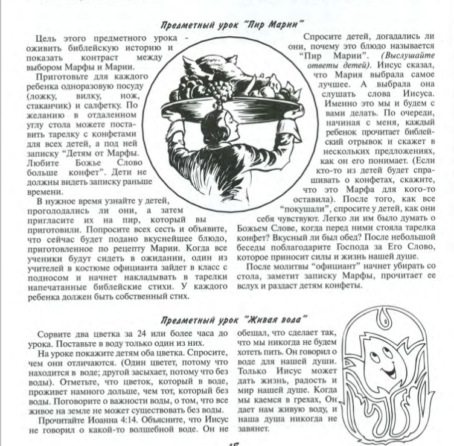

Погружение
Спроси у кого-нибудь из своих друзей: что самое
главное в жизни? Кто-то ответит: главное — это хорошо учиться и потом найти
интересную работу. Другой скажет: главное — много путешествовать, чтобы были
яркие впечатления, приключения… Третий вспомнит о здоровье, четвёртый — о
деньгах… И каждый будет в чём-то прав. Действительно, и это может быть важным,
и то… Сколько разных «правд» получается! Вернее, мы называем это «правдами», но
если посмотреть на каждый ответ внимательно и задуматься, то в каждом можно
найти свои «подводные камни»: и учёба может не нравиться, и не всякий, кто
хорошо учится, потом находит любимую работу, и в путешествиях случаются
неприятности и болезни, и деньги не всегда приносят удовлетворение, и даже
собственное здоровье порой не радует, если рядом страдает другой человек…
Получается, такой правды, которая принесла бы счастье всем-всем людям, не
существует?.
Библейский текст
Блаженны
алчущие и жаждущие правды, ибо они насытятся.
Но Иисус говорит в этом стихе о счастье и о правде!
При нынешних условиях жизни лишь немногие знают, что
такое настоящий голод или настоящая жажда. В древности же все было иначе. На
заработок трудящегося человека нельзя было разбогатеть. Рабочий человек в
Палестине ел мясо только раз в неделю; он, как и поденщик (тот, кто получает
плату за работу, сделанную в этом дне), всегда жил на грани голода и голодной
смерти.
Еще сложнее было с питьем. Люди не могли повернуть в
доме кран и набрать чистой холодной воды. Когда человек находился в дороге,
вдруг мог подуть горячий ветер, приносивший песчаную бурю. Ему ничего не
оставалось делать, как завернуться с головой в свой шерстяной плащ, повернуться
спиной к ветру и ждать, а вихрящийся песок забивался в ноздри и в горло,
человек задыхался и его томила страшная жажда. В жизни нынешних европейцев нет
ничего подобного.
Голод, о котором идет речь в этом блаженстве, — это не
тот голод, который можно утолить, перехватив бутерброд; а жажда — это не та
жажда, что можно утолить чашкой чая или кофе. Это голод человека, умирающего от
голода, из-за полного отсутствия пищи; это жажда, от которой человек умрет,
если не напьется.
В таком случае это блаженство представляет собой
вопрос и вызов: «Насколько вам нужна праведность? Жаждете ли вы ее так же, как
жаждет пищи умирающий с голоду человек, или как умирающий от жажды хочет воды?»
Насколько сильно наше желание праведности?
В основе заповеди лежит идея: счастлив не тот
человек, который стал праведным, а тот, кто жаждет праведности всем своим
сердцем. Если бы счастье ждало только тех, кто достиг праведности, то
блаженных не было бы вообще. Но счастье обретают те, кто, несмотря на все
неудачи и падения, связывают с ним страстную любовь к возвышенному.
Английский писатель Герберт Уэллс сказал где-то:
«Человек может быть плохим музыкантом и все же страстно любить музыку».
Царь Давид всегда хотел построить храм Божий, но так
никогда и не смог осуществить свое желание. Ему было отказано в этом, но Бог
сказал ему: «Хорошо, что это у тебя лежит на сердце» (3Цар 8:18). В Своем
милосердии Бог судит нас не только по нашим делам и достижениям, но также и по
нашим мечтам. Даже если человек никогда не достигнет праведности, даже если он
до конца дней своих будет испытывать чувство голода или жажды по праведности,
ему не отказано в счастье.
Блаженны те, кто алчет и жаждет всю правду, полную
правду.
А вот этого люди хотят редко. Они довольствуются
частью правды. Человек, например, может быть хорошим человеком в том смысле,
что сколько бы и как бы ни искали, в нем нельзя найти недостатков. Его
честность, нравственность и почтенность не подвергаются сомнению; но вполне
может быть, что никто не мог бы прийти к нему со своими тревогами и
переживаниями. Этот человек содрогнулся бы, если бы кто-нибудь захотел сделать
это. Существует добродетель, которая сочетается с жестокостью, со склонностью
осуждать, с отсутствием сочувствия. Но это неполная добродетель.
Иной человек может быть полон всевозможных
недостатков; он может пить, играть в азартные игры и выходить из себя; и в то
же время, когда у кого-нибудь неприятности или большие заботы, он отдаст
последнюю копейку из своего кармана и последнюю рубашку со своего тела. Но и
это тоже неполная добродетель.
Это заповедь говорит нам, что нельзя
довольствоваться частичной добродетелью. Блажен человек, алчущий и жаждущий
полной, совершенной добродетели.
Есть много того, без чего не может прожить человек.
Например, без воздуха, солнечного света, тепла и, конечно же, воды и пищи.
Иисус сказал, что по-настоящему счастливыми можно считать тех людей, которые
изголодались по праведности. Что же такое праведность? Быть праведным – значит жить
правильно, так как этого хочет Господь. Быть праведным нелегко и порой
неудобно. Намного проще в ответ на обиду нагрубить или пустить в ход кулаки.
Намного легче не делать домашние задания, а списывать их. Не нужно много
смелости, чтобы соврать и избежать заслуженного наказания. Но легкий путь не
всегда правильный. Иисус сказал, что ты будешь счастлив, если изо всех сил
будешь хотеть жить правильно, по Божьим заповедям. В запутанной ситуации спроси
у себя: «Как на моем месте поступил бы Иисус?» А потом сделай то, что праведно,
даже если это нелегко.
Библейский пример того, как правда победила ложь – Бытие
20 глава Авраам и Сарра.
Просто правда человеческая несовершенна, она у каждого
— своя. Она может быть неверной, может меняться. Значит, нужно искать не
правду, а Истину, то есть правду Божью! А где ее отыскать? Только там, где Сам
Бог: в Евангелии, в Церкви, в исполнении заповедей, в любви к ближнему.
ПЕРЕОСМЫСЛЕНИЕ
Как жить по правде?
Прежде всего, следует стремиться познать и принять
всем сердцем Бога и Его слова.
Во-вторых, брать пример со Спасителя. Иисус Христос –
образец праведности, «Солнце правды». «Так надлежит нам исполнить всякую
правду», – сказал Он, принимая Крещение от Иоанна Предтечи (Мф.3:15).
В-третьих, стараться жить по Слову Божьему. Для того,
чтобы жить по правде, необходимо, прежде всего, принять две заповеди, в которых
Христос сконцентрировал Закон Божий:
«…возлюби Господа Бога твоего всем сердцем твоим и всею душею твоею и всем разумением твоим: сия есть первая и наибольшая заповедь; вторая
же подобная ей: возлюби ближнего твоего, как самого себя; на сих двух заповедях
утверждается весь закон и пророки» (Мф.22:36-40), а потом в личных отношениях
продолжать узнавать характер Бога, узнавать Его как личность, узнавать волю Его
и жить соответственно тому, что ты узнал о Боге.
«Насколько вам нужна праведность? Жаждете ли вы ее так
же, как жаждет пищи умирающий с голоду человек, или как умирающий от жажды
хочет воды?» Насколько сильно наше желание праведности?
Римлянам 3:20-28 «...потому что делами
закона не оправдается пред Ним никакая плоть; ибо законом
познаётся грех. Но ныне, независимо от закона, явилась правда Божия, о которой свидетельствуют
закон и пророки, правда Божия через веру в Иисуса Христа во всех и
на всех верующих, ибо нет различия, потому что все согрешили и
лишены славы Божией, получая оправдание ДАРОМ, по благодати Его,
искуплением во Христе Иисусе, которого Бог предложил в жертву
умилостивления в Крови Его через веру, для показания правды Его в прощении
грехов, соделанных прежде, во [время] долготерпения Божия, к показанию правды
Его в настоящее время, да [явится] Он праведным и оправдывающим
верующего в Иисуса. Где же то, чем бы хвалиться? уничтожено. Каким
законом? [законом] дел? Нет, но законом веры. ИБО МЫ ПРИЗНАЁМ, ЧТО
ЧЕЛОВЕК ОПРАВДЫВАЕТСЯ ВЕРОЮ, НЕЗАВИСИМО ОТ ДЕЛ ЗАКОНА».
Этот отрывок,
как и многие другие отрывки Нового Завета, несет в себе настоящий переворот.
«Евангелие» означает «благая весть», и весть в только что прочитанном нами
отрывке – поистине благая! Эти стихи с самого начала дают нам ясно понять, что
человек никак не может получить оправдание, т.е. стать праведным, соблюдая
Моисеев закон (включая 10 заповедей, которые также являются частью этого
закона). В Библии ясно говорится, что добрые дела – даже такие, например, как
соблюдение всех 10 заповедей, хотя они и составляют лишь малую часть всего
закона, – не могут сделать нас праведными перед Богом. Дело не в том, что
добрые дела не угодны Богу; дело в том, что нам бы их никогда не хватило, чтобы
достичь праведности, к тому же их предназначение совсем не в этом. Мы
не можем заслужить праведность перед Богом добрыми делами.
Но Иисус в нагорной проповеди учит нас тому, что
счастье наше в бесконечной жажде по этой праведности, которая есть только в
Нем, в Его искупительной жертве. Этот тот голод и та жажда, которую невозможно
утолить единожды, но она возникает снова и снова, когда мы отходим от
Источника.
Наблюдай за своим сердцем и не дай ему обмануться
частичной добродетелью, но пусть оно постоянно находится в поиске полной
Истины.
Применение
Для того, чтобы жить по правде и быть от этого
счастливым, нам необходимо принять жертву Иисуса за нас, постоянно пребывать в
общении с Богом, погружаться в слово Божье!
Золотой стих
Блаженны
алчущие и жаждущие правды, ибо они насытятся.
Евангелие
от Матфея 5:6
Обязанности относительно праведного образа
жизни
- быть орудием праведности => Рим 6:13,18,19
- стремиться к праведности => Мф 5:6
- выказывать праведность => Мф 5:20 ; Ам 5:24
- держаться праведности => Ис 51:1 ; 1Тим 6:11 ; 2Тим
2:22
- облечься в праведность => Еф
4:24 ; Еф 6:14
- искать праведности => Мф 6:33
- являть плоды праведности => Ос 10:12 ; 2Кор 9:10 ;
Евр 12:11
- жить для праведности => 1Пет 2:24
- делать все по правде => 1Ин 2:29 ; 1Ин 3:7
- избегать греха => 2Кор 6:14,15
Можно сыграть в игру пир Марии, для того, чтобы учиться добывать из Слова Божьи
истины. Можно использовать стихи «обязанности относительно праведного образа
жизни»

Места из Писания для игры «Пир Марии»:
Всё могу в укрепляющем меня Иисусе Христе Филиппийцам 4:13
ибо дал нам Бог духа не боязни, но силы и любви и
целомудрия. 2 Тимофею 1:7
Когда я в страхе, на Тебя я уповаю. Псалом 55:4
Вот Я повелеваю тебе: будь твёрд и мужествен, не страшись
и не ужасайся; ибо с тобою Господь, Бог твой, везде, куда ни пойдёшь. Иисус
Навин 1:9
«Ибо Я знаю намерения, какие имею о вас, — говорит
Господь, — намерения во благо, а не на зло, чтобы дать вам будущность и
надежду. (Иеремия 29:11)
Если чего попросите во имя Моё, Я то
сделаю. Евангелие от Иоанна 14:14
Псалом Давида. Господь — свет мой и спасение моё: кого
мне бояться? Господь — крепость жизни моей: кого мне страшиться? Псалом 26 :1
Дети, повинуйтесь своим родителям во всём, ибо это
благоугодно Господу. (Послание к Колоссянам 3:20)
Итак, едите ли вы, пьёте ли, или что-либо делаете, всё
делайте во славу Божию. (1-е Коринфянам 10:31)
Поступай с другими так, как хочешь, чтобы поступали с
тобой. (Луки 6:31)
Все заботы ваши возложите на Него, ибо Он печётся о вас.
(1 Петра 5:7)
Притом знаем, что любящим Бога, призванным по Его изволению,
всё содействует ко благу. Послание к Римлянам 8:28
Сзади и спереди Ты объемлешь меня, и полагаешь на мне
руку Твою. Псалом 138:5
Славлю Тебя, потому что я дивно устроен. Дивны дела Твои,
и душа моя вполне сознаёт это. Псалом 138:14